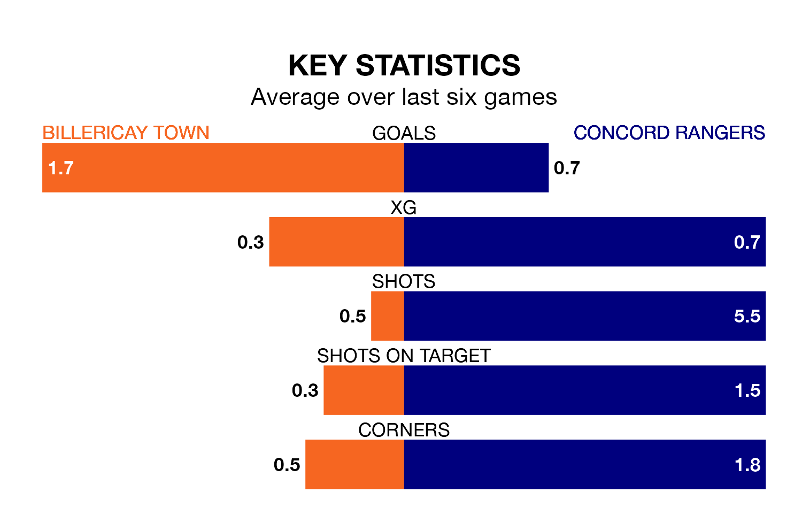

Billericay Town are heavy favourites to keep all three points at home in Monday's kick-off against Concord Rangers.
Billericay, who sit seventh in the Isthmian Premier Division with 37 games played, are priced at 1.3 to seal victory at the AGP Arena.
Sitting 14 places and 37 points behind them in the table, Concord are 6.6 to win with *Betting Company*, while the draw is at 4.6.
Billericay are in bad form in the Isthmian Premier Division, with one win and a draw from their last six games.
But with no wins and six losses over that period, Concord's form is even worse – they have taken no points from 18, compared to Town's four.
In the last 10 years, Billericay and Concord have played each other on seven occasions. Concord won four of them and they drew three times.
On average, Billericay scored 0.9 goals and the Beach Boys 1.9 in those matches.
Their last meeting was on February 20, when Concord won 2-1 at home.
With 29 goals in 33 games so far this season, Rangers are the league's second-lowest scorers with 0.9 goals per game. And they are conceding more than average, letting in 63 goals at a rate of 1.9 per game.
The hosts, meanwhile, are average scorers, with 1.6 goals per game. They have conceded 1.3 goals per game.
Billericay's last match was on Saturday, a 2-1 win against Dulwich Hamlet.
Concord lost 2-1 against Carshalton Athletic last time out, on Friday.
Updated: 10:31 (UTC), 31/03/24